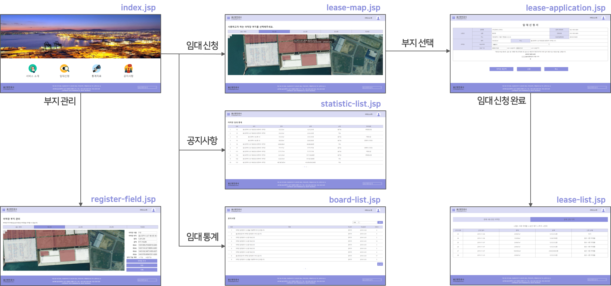

학부 프로젝트
목차
브이월드를 활용한 야적장 임대관리 시스템 설계 및 구현(졸업 프로젝트)
2019.12 with 울산항만공사(한이음 스마트 항만 물류 트랙)
Java Javascript HTML CSS JSP MyBatis MariaDB Eclipse 💡 개발의 필요성
- 팩스, 이메일 등을 통한 복잡한 수기 업무 방식을 대체할 시스템이 필요함
- 부지 배정 결과를 담당자가 엑셀로 일일이 그려서 나타내야 함
- 민원 업체마다 야적장의 규격을 다르게 설정하고 있어 하나의 통일된 규격이 필요함
💻 개발 과정
- 사용자가 브이월드 2D 위성 지도 위에 야적장 부지를 직접 그려 임대를 신청하고, 관리할 수 있는 웹 서비스 개발
- 브이월드에서 제공하는 Open GIS API를 이용해 2D 위성 지도를 받아 와 야적장 운영 현황 시각화
- 오픈레이어스 라이브러리를 이용해 지도 위에 폴리곤 도형을 그릴 수 있도록 구현
- 데이터베이스(MariaDB) 연결하여 회원 및 야적장 부지 관리
- 회원 권한(민원 업체, 관리자)에 따라 기능 분리
- 서버로 Amazon Cloud Server(EC2) 사용
📊 개발 결과

- 관리자 권한을 가진 사용자의 경우 위성 지도 위에 폴리곤을 그려 야적장 부지를 직접 지정하고 등록, 관리할 수 있게 되었음
- 민원 업체 권한을 가진 사용자의 경우 위성 지도 위에 그려진 야적장 부지를 클릭하여 간편하게 임대를 신청할 수 있게 되었음
- 웹 사이트 구축을 통해 복잡하고 귀찮았던 기존의 임대 신청 과정을 전산화하고, 야적장 부지를 좀 더 효율적으로 관리할 수 있게 되었음